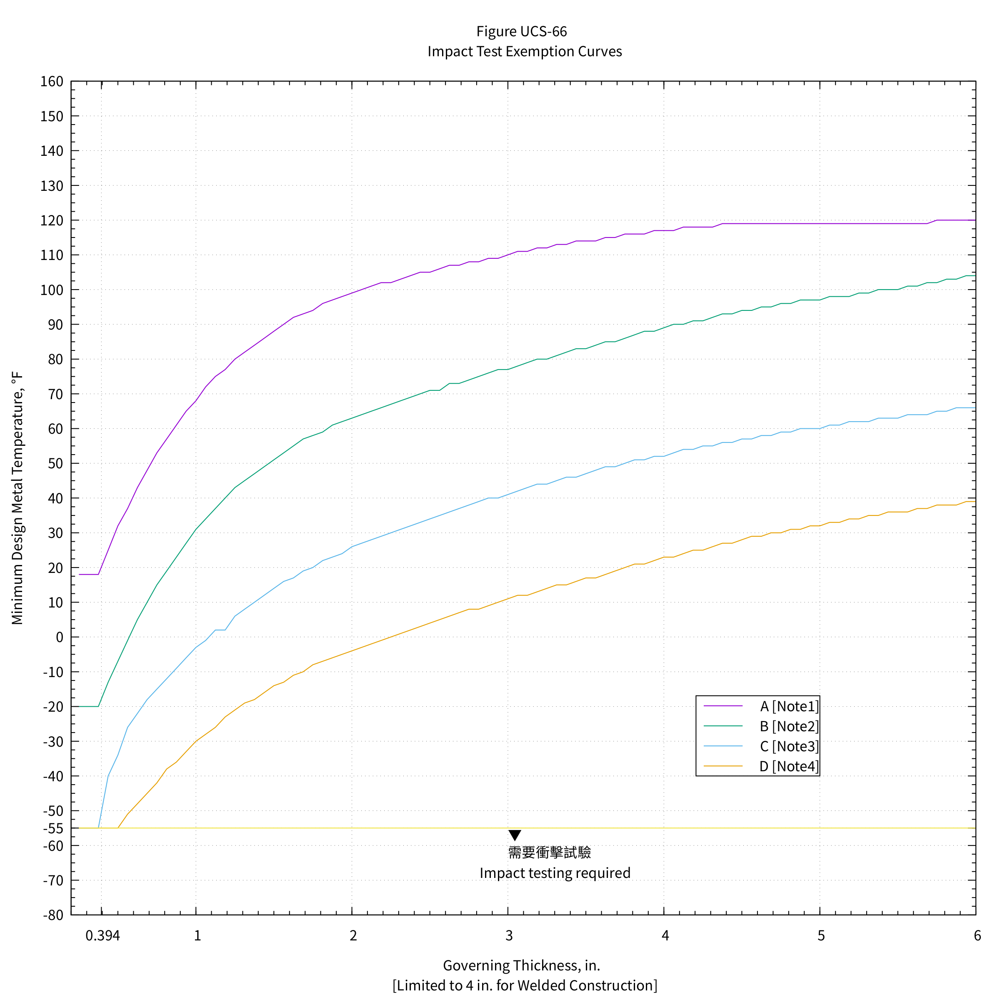
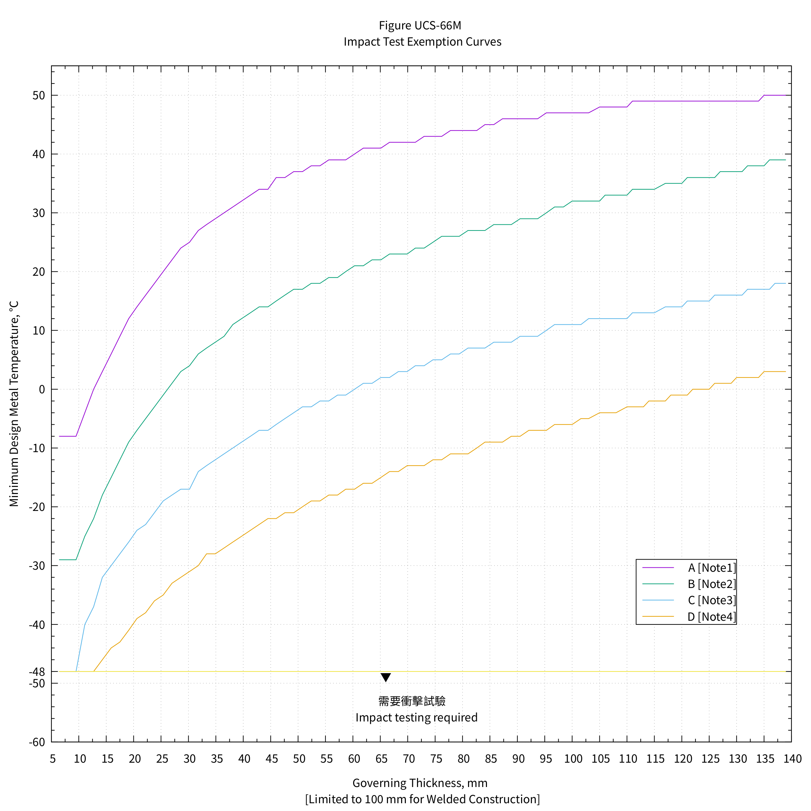
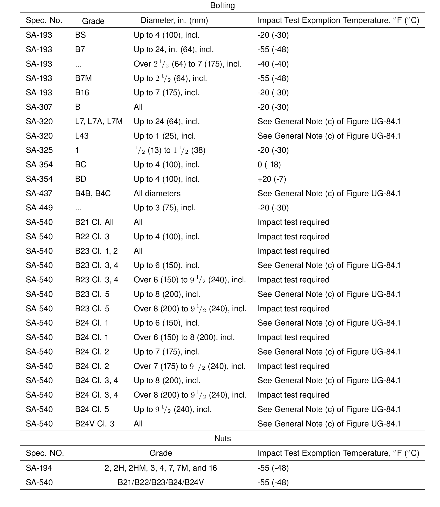
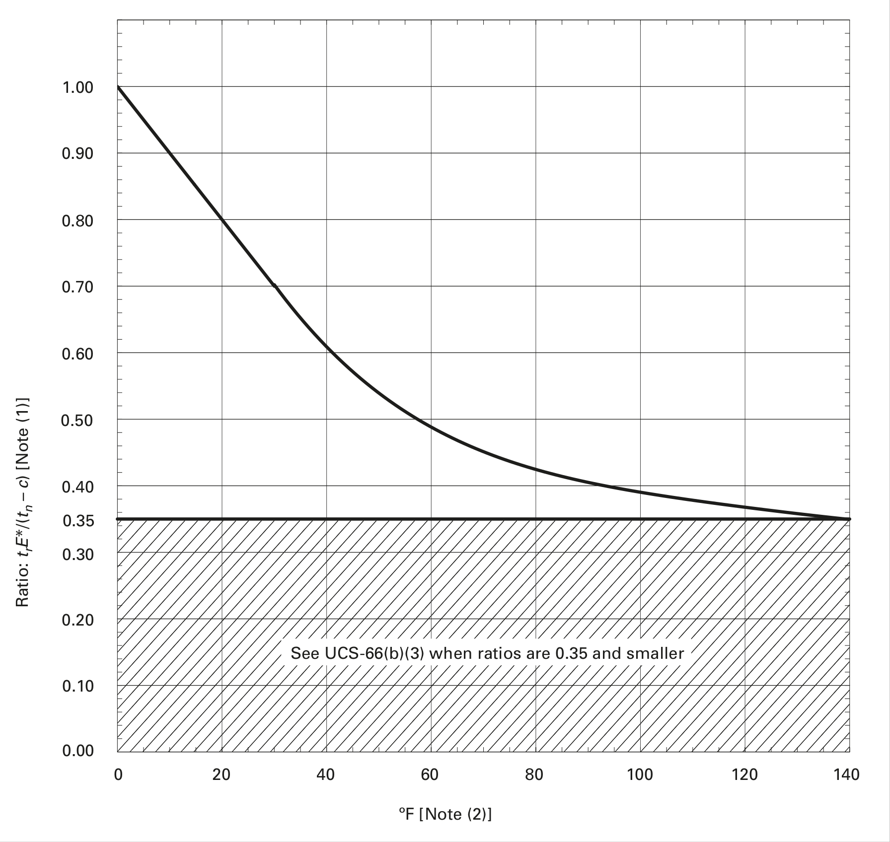
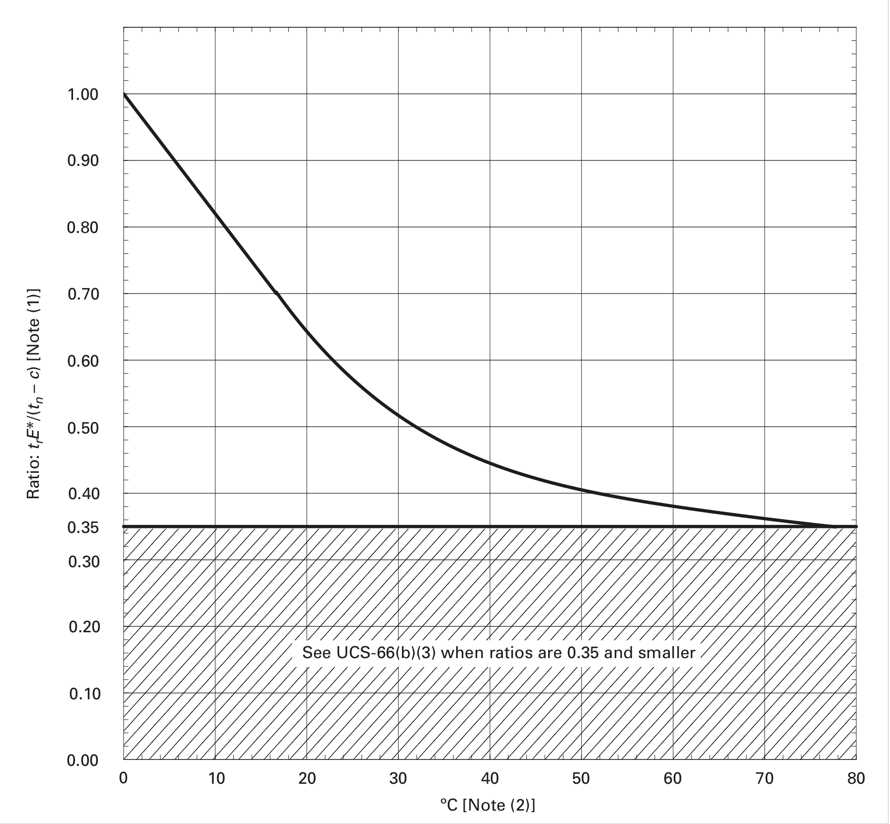
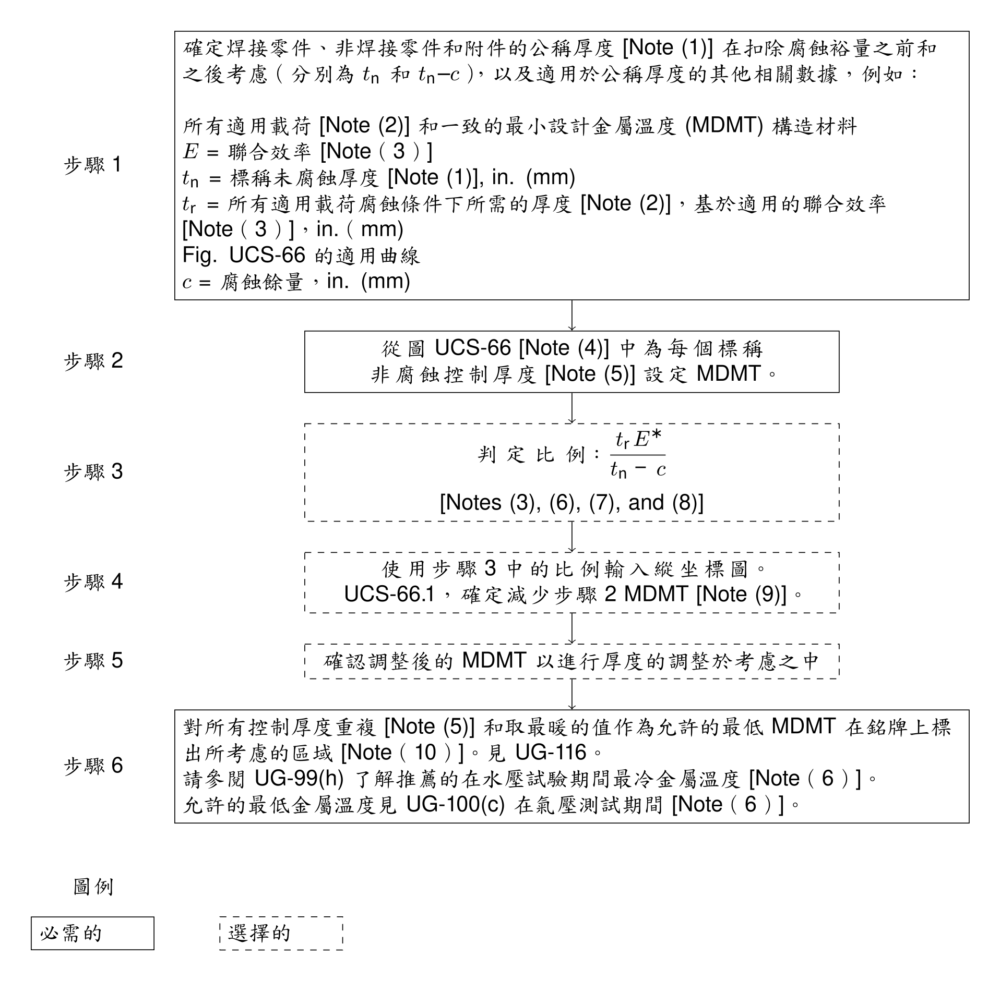

低合金鋼及碳鋼低溫作業/ 判定 MDMT
Table of Contents
1. 衝擊試驗豁免曲線
1.1. 美國慣用單位

1.2. SI 單位

1.3. GENERAL NOTES
- Tabular values for this figure are provided in Table UCS-66.
- See UCS-66(a).
For bolting and nuts, the following impact test exemption temperatures shall apply:

- When no class or grade is shown, all classes or grades are included.
- The following shall apply to all material assignment notes:
- Cooling rates faster than those obtained by cooling in air, followed by tempering, as permitted by the material specification, are considered to be equivalent to normalizing or normalizing and tempering heat treatments.
- Fine grain practice is defined as the procedure necessary to obtain a fine austenitic grain size as described in SA-20.
- Normalized rolling condition is not considered as being equivalent to normalizing.
- Cooling rates faster than those obtained by cooling in air, followed by tempering, as permitted by the material specification, are considered to be equivalent to normalizing or normalizing and tempering heat treatments.
- Castings not listed in Notes (1) and (2) below shall be impact tested. </li>
1.4. NOTES:
- Curve A applies to the following:
- all carbon and all low alloy steel plates, structural shapes, and bars not listed in Curves B, C, and D below
- SA-216 Grades WCB and WCC if normalized and tempered or water-quenched and tempered; SA-217 Grade WC6 if normalized and tempered or water-quenched and tempered
- A/SA-105 forged flanges supplied in the as-forged condition
- all carbon and all low alloy steel plates, structural shapes, and bars not listed in Curves B, C, and D below
- Curve B applies to the following:
- see below:
A/SA-105 forged flanges produced to fine grain practice and normalized, normalized and tempered, or quenched and tempered after forging
SA-216 Grade WCA if normalized and tempered or water-quenched and tempered
SA-216 Grades WCB and WCC for thicknesses not exceeding 2 in. (50 mm) , if produced to fine grain practice and water-quenched and tempered
SA-217 Grade WC9 if normalized and tempered
SA-299
SA-414 Grade A
SA-515 Grade 60
SA-516 Grades 65 and 70 if not normalized
SA-612 if not normalized
SA-662 Grade B if not normalized
SA/EN 10028-2 Grades P235GH, P265GH, P295GH, and P355GH as rolled
SA/AS 1548 Grades PT430NR and PT460NR
SA/GB 713 Grade Q345R if not normalized - except for cast steels, all materials of Curve A, if produced to fine grain practice and normalized, that are not listed in Curves C and D below
- all pipe, fittings, forgings and tubing not listed for Curves C and D below
- parts permitted under UG-11 even when fabricated from plate that otherwise would be assigned to a different curve
- see below:
- Curve C applies to the following:
- see below:
SA-182 Grades F21 and F22 if normalized and tempered
SA-302 Grades C and D
SA-336 F21 and F22 if normalized and tempered, or liquid quenched and tempered
SA-387 Grades 21 and 22 if normalized and tempered, or liquid quenched and tempered
SA-516 Grades 55 and 60 if not normalized
SA-533 Types B and C Class 1
SA-662 Grade A
SA/EN 10028-2 Grade 10CrMo9–10 if normalized and tempered - all materials listed in 2(a) and 2(c) for Curve B if produced to fine grain practice and normalized, normalized and tempered, or liquid quenched and tempered as permitted in the material specification, and not listed for Curve D below
- see below:
- Curve D applies to the following:
SA-203
SA-299 if normalized
SA-508 Grade 1
SA-516 if normalized or quenched and tempered
SA-524 Classes 1 and 2
SA-537 Classes 1, 2, and 3
SA-612 if normalized
SA-662 if normalized
SA-738 Grade A
SA-738 Grade A with Cb and V deliberately added in accordance with the provisions of the material specification, not colder than −20°F (−29°C)
SA-738 Grade B not colder than −20°F (−29°C)
SA/AS 1548 Grades PT430N and PT460N
SA/EN 10028-2 Grades P235GH, P265GH, P295GH, and P355GH if normalized
SA/EN 10028-3 Grade P275NH
SA/GB 713 Grade Q345R if normalized
2. 在沒有衝擊測試的情況下降低最低設計金屬溫度
2.1. 美國慣用單位

| \(c\) | = | corrosion allowance, in. |
| \(E^*\) | = | as defined in Figure UCS-66.2, Note (3) |
| \(t_n\) | = | nominal thickness of the component under consideration before corrosion allowance is deducted, in. |
| \(t_r\) | = | required thickness of the component under consideration in the corroded condition for all applicable loadings [Figure UCS-66.2, Note (2)], based on the applicable joint efficiency \(E\) [Figure UCS-66.2, Note (3)], in. |
NOTES:
- Alternative Ratio = S* E* divided by the product of the maximum allowable stress value from Table UCS-23 times E , where S* is the applied general primary membrane tensile stress and E and E * are as defined in Figure UCS-66.2, Note (3)
- See UCS-66(b).
2.2. SI 單位

| \(c\) | = | corrosion allowance, \(mm\) |
| \(E^*\) | = | as defined in Figure UCS-66.2, Note (3) |
| \(t_n\) | = | nominal thickness of the component under consideration before corrosion allowance is deducted, \(mm\) |
| \(t_r\) | = | required thickness of the component under consideration in the corroded condition for all applicable loadings [Figure UCS-66.2, Note (2)], based on the applicable joint efficiency E [Figure UCS-66.2, Note (3)], \(mm\) |
NOTES:
- Alternative Ratio = S* E* divided by the product of the maximum allowable stress value from Table UCS-23 times E , where S* is the applied general primary membrane tensile stress and E and E * are as defined in Figure UCS-66.2, Note (3)
- See UCS-66(b).
3. UCS-66 無衝擊試驗確定最低設計金屬溫度 (MDMT) 規則圖

NOTES:
- 對於材料規範允許軋製公差的管材，扣除軋製公差後的厚度應作為未腐蝕的公稱厚度 tn，以確定銘牌上的 MDMT。同樣，對於成型頭，成型後的最小規定厚度應用作 tn 。
- 載荷，包括在 UG-22 中列出的載荷，這會在同時發生的 MDMT 處產生一般的主要膜拉伸應力。
- E 是用於計算 tr 的聯合效率（表 UW-12）； E* 具有等於 E 的值，但 E* 不得小於 0.80。對於鑄件，使用質量因數或接頭效率 E，以支配設計為準。
- 圖 UCS-66 的構造使得如此選擇的 MDMT 被認為與在第 II 部分 D 子部分 1 表 1A 中的最大允許拉伸應力值下施加的一般主膜拉伸應力同時發生。圖 UCS-66 的表格值顯示在表 UCS-66 中。
- 有關控制厚度的定義，請參見 UCS-66(a)(1)(-a)、(a)(1)(-b) 和 (a)(1)(-c)。
- 如果計算的試驗壓力的基礎大於設計壓力 [UG-99(c) 試驗]，則應使用基於計算的試驗壓力的基礎確定的 tr 和相關的適當的 tn - c 值的比率確定在水壓試驗期間推薦的最冷金屬溫度和在氣動試驗期間允許的最冷金屬溫度。見 UG-99(h) 和 UG-100(c)。
- 或者，可以使用 S*E* 除以第 II 部分 D 部分第 1 子部分錶 1A 中的最大允許拉伸應力值乘以 E 的比值，其中 S* 是應用的一般初級膜拉伸應力和 E 和 E* 的定義見 Note (3)。
- 對於 UCS-66(b)(1)(-b) 和 UCS-66(i)(2)，MDMT 處的最大設計壓力與 MDMT 處的最大允許壓力 (MAP) 之比應為用過的。 MAP 定義為部件的設計方程式確定的最高允許壓力，該組件使用標稱厚度減去腐蝕裕量和 MDMT 第 II 部分 D 部分第 1 子部分錶 1A 中的最大允許應力值。對於 UCS-66(c) 中定義的鐵素體鋼法蘭，可以使用 MDMT 或 100°F (38°C) 溫度下的法蘭額定值作為 MAP。
- 對於 MDMT 降低至 40°F (22°C) 並包括在內，降低可以通過以下方式確定：MDMT 降低 = (1 - 比率) 100°F (56°C)。
- 可以根據需要選擇性地使用經過衝擊測試的材料來獲得更冷的 MDMT（參見 UG-84）。另見 UCS-68(c)。